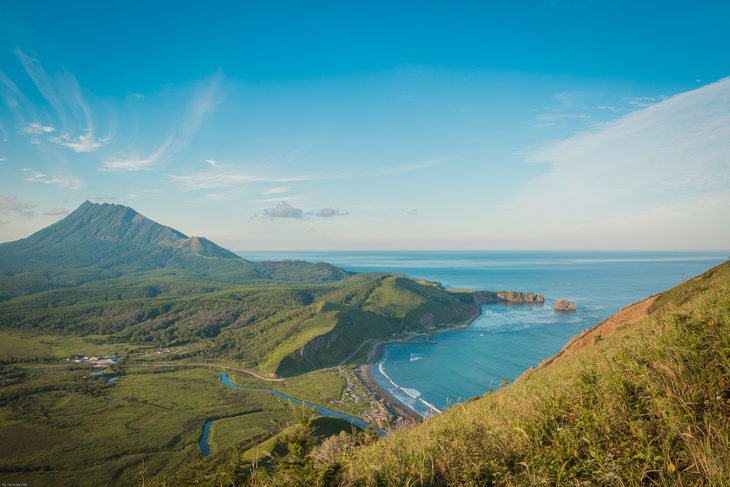

О Сахалине
Сахалинская область – единственный в стране островной регион, расположенный на 87 островах и включающий в себя остров Сахалин с прилегающими к нему территориями островов Уш, Зенковича, Монерон, Тюлений и две гряды Курильских островов (Большой и Малой). Основным климатообразующим фактором на Сахалине служат окружающие его Охотское и Японское моря. Их влияние выражается в смягчении зимних холодов, особенно в прибрежных районах, в обилии зимних осадков, делающих остров одним из наиболее многоснежных районов России, в муссонном характере ветров и очень высокой влажности воздуха.
Население
| Город | Население |
|---|---|
| Южно-Сахалинск | 200 235 |
| Корсаков | 33 451 |
| Холмск | 27 500 |
| Оха | 20 000 |
| Поронайск | 15 000 |
| Доблинск | 11 500 |
| Среднее население: | 51 000 |
Заказать экскурсию
Оформи заявку на экскурсию сейчас и получи специальную скидку 15%. Чтобы воспользоваться этим предложением, пожалуйста, заполните форму. Мы обязательно с вами свяжемся и предложим возможные экскурсии!